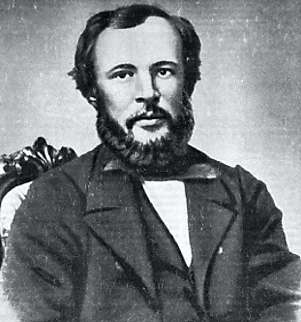
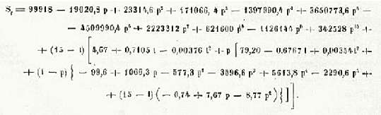

Борис Акунин
Мой календарь
И не чего-нибудь, а водки.
12 февраля 1865 года молодой ученый Дмитрий Иванович Менделеев совершил первое из двух своих выдающихся открытий, куда более востребованное человечеством, нежели «Периодическая таблица». Во всяком случае на свете гораздо больше людей, в особенности соотечественников, кто интересуется первым открытием Менделеева намного живее, чем вторым.
В сей день тридцатилетний Менделеев защитил на физико-математическом факультете Императорского Санкт-Петербургского университета докторскую диссертацию «О соединении спирта с водой», где выводилась формула современной, химически правильной водки.
Формула выглядела так (спишите себе):
Научный Совет высоко оценил работу и присвоил ученому звание экстраординарного профессора по кафедре технической химии.
Только не нужно думать, что Дмитрий Иванович приложил руку к спаиванию русского народа. Народ преотлично спивался и до вышеприведенной формулы. Просто теперь водка стала качественней.
За Менделеева! До дна!